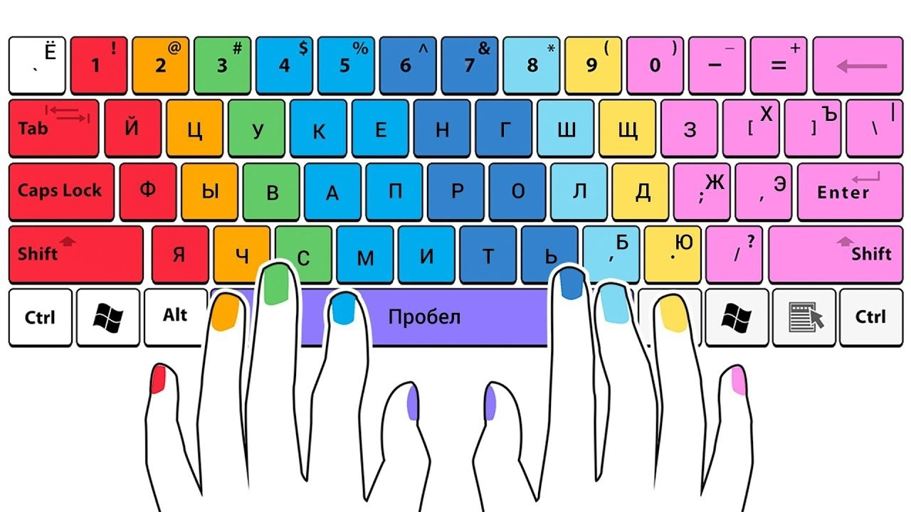
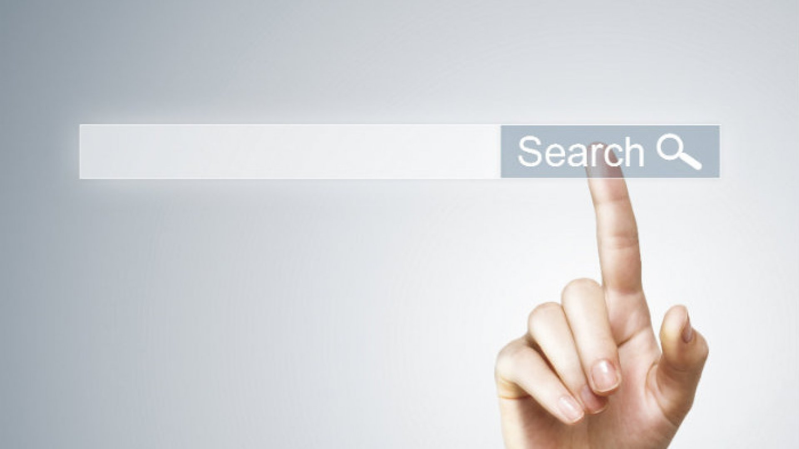
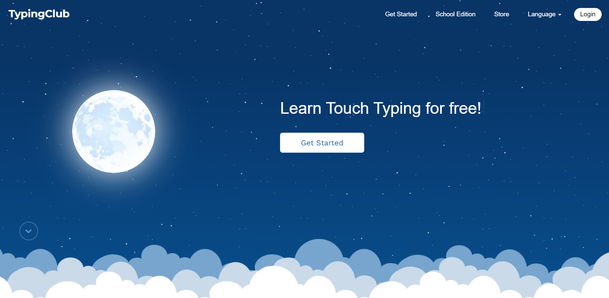

Всем привет!
На этой странице я расскажу о своём опыте изучения "Слепого метода печати"

Что такое "Слепой метод печати".
Вы можете узнать из статьи на Википедии
Впервые, я узнал об этом методе пару лет назад, когда проходил срочную службу в ВС РФ.
Там нас обучали 3 раза в неделю, в течении пары месяцев. Что дало весьма неплохие результаты.
Рассказать, как именно это было, к сожалению, я не могу. Но могу рассказать, как я делал это уже после армии.
Зачем же изучать "Слепой метод печати"?
Преимущества слепой печати
- Увеличивает скорость и объем работы. Набирая текст вслепую, вы значительно повышаете скорость печати.
При обычном двухпальцевом методе нужно постоянно опускать и поднимать глаза.
Мы так к этому привыкли, что уже не замечаем. Такие небольшие «подглядки» вверх-вниз отнимают скорость.
Сравните: максимальная скорость печати двумя пальцами — 260 знаков в минуту, а десятью — до 1000.
- Экономит время на редактирование. При слепом наборе вы фокусируетесь на экране компьютера.
Так все ваше внимание занимает содержание написанного.
Вы делаете меньше опечаток и ошибок в словах — повышается скорость работы.
- Снижает ментальное утомление. Слепая печать позволяет сконцентрироваться на одной задаче.
Мозг не отвлекается на другую информацию — он занят обдумыванием текста.
- Снижает физическую усталость. Метод десятипальцевой печати разрабатывался с учетом физиологии человека — так,
чтобы тело всегда находилось в удобном положении. Когда вы смотрите прямо на экран компьютера, улучшается осанка.
Плюс меньше болят шея, руки и даже глаза.
Ведь при слепой печати вы не опускаете взгляд на клавиатуру, следовательно, не так сильно напрягаете зрение.
- Добавляет привлекательную строчку в резюме. Вовсе не обязательно быть копирайтером или секретарем,
чтобы обучаться слепой печати. Слепой набор — отличный навык. Он пригодится в любой профессии.
Увидев информацию про слепую печать, работодатель точно уделит внимание вашему резюме.
- Развивает память. С возрастом наш мозг теряет нейропластичность — способность к изменению и адаптации.
Изучение нового навыка помогает ее поддерживать.
Стоит сказать и о незначительных недостатках
- Нужно переучиваться. Самая трудная часть в изучении слепой печати — отказаться от привычного двухпальцевого метода.
Сначала он кажется удобнее и быстрее. И это действительно так. Первое время скорость слепого набора будет даже меньше обычной.
Главное — не сдаваться. Уже через неделю вы заметите прогресс, а через четыре — сможете печатать в два раза быстрее, чем раньше.
- Самодисциплина и мотивация. Простая истина: чтобы получить результаты, нужно работать.
Обучение слепой печати требует усилий. Хорошо, когда мотивация очевидна.
Допустим, десятипальцевый метод нужен вам для работы — иначе не поднимут зарплату.
В ином случае все зависит только от силы воли и самодисциплины. Чтобы не потерять интерес к урокам слепой печати,найдите подходящий тренажер.
В интернете есть множество вариантов: с играми, задачками, разноцветные, минималистичные и так далее.
- Необходимо свободное время. Одной мотивации для обучения слепой печати мало. Еще нужно время.
Занимайтесь регулярно — уделяйте урокам хотя бы по 30 минут в день. Этого хватит, чтобы освоить десятипальцевый метод за месяц.
Не торопитесь в изучении,сначала проработайте строчные буквы.
К цифрам, знакам препинания и вспомогательным символам перейдете после.
Для начала нужно выбрать сайт, на котором будем проходить обучение.

В интернете большое множество ресурсов, на которых "Слепой метод печати" можно изучать бесплатно.
Вот некоторые из них (*не реклама):
Свой выбор я остановил на сайте TypingClub
Почему именно TypingClub?
\

- Удобный интерфейс.
- Возможность создать аккаунт и не терять прогресс.
- В профиле сохраняется глубокая статистика о всех твоих тренировках.
- Можно выбрать несколько языков для тренировки и изучать их паралельно, не теряя пройденных уроков.
- Плавное погружение, начиная с основ.
- Большое количество интересных текстов, которые набираются с удовольствием.
- Возможность выбрать блок на ошибки (остановка на первом неправильном символе, втором или третьем. Или не блокировать вовсе)
Немного о моём инструменте для печати.
Хорошая и удобная клавиатура очень влияет на скорость и точность вашей печати. Поэтому стоит выбрать такую, которая вам подойдет.
На данный момент я пользуюсь клавиатурой своего ноутбука. Она очень и очень удобная.
А так же механической клавиатурой. Механические клавиатуры подходят для набора текста лучше всего.
Клавиатура, которой пользуюсь я, выглядит следующим образом:

Некоторые преимущества механических клавиатур над мембранными
- Тактильный отклик. Нажатие на клавиши отчётливо ощущается и не требует усилий.
- Мягкость и плавность хода. При вводе не нужно полностью утапливать кнопки, достаточно немного нажать их,
а с некоторыми переключателями и вовсе едва коснуться. Это снимает лишнюю нагрузку с кистей и снижает их утомляемость.
- Долговечность. За счёт особенностей конструкции и качественных материалов механические клавиатуры не подвержены износу.
Даже спустя десятилетия клавиши будут нажиматься так же легко и чётко, как в день покупки.
Ресурс переключателей может достигать 50-100 млн нажатий.В случае поломки его легко заменить за 1–2 минуты.
Нет единой подложки с контактами, которая в случае повреждения не подлежит ремонту.
Средний срок службы хорошей механической клавиатуры — от 5 лет.
- Простота в уходе. Благодаря съёмным колпачкам клавиатуру очень легко разобрать и почистить.
К сожалению, в моей клавиатуре на данный момент установлены Красные "Свитчи", что немного усложняет набор текста.
Поэтому могу посоветовать для работы с текстом к примеру Синие.
Хотя стоит принять во внимание факт громкости работы данных "свитчей".
Про выбор наиболее подходящей клавиатуры я расскажу в следующей статье.
А пока, надеюсь, что статья вам понравилась и Вы начнёте изучать "Слепой метод печати", если ещё не сделали это.